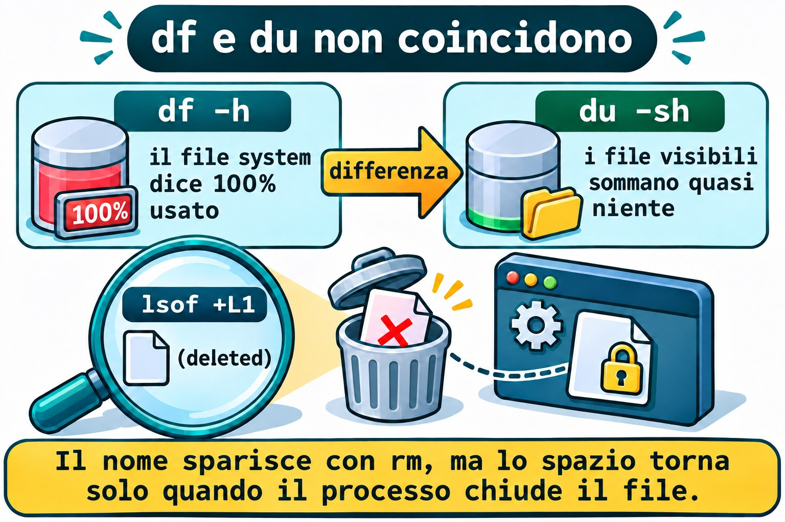
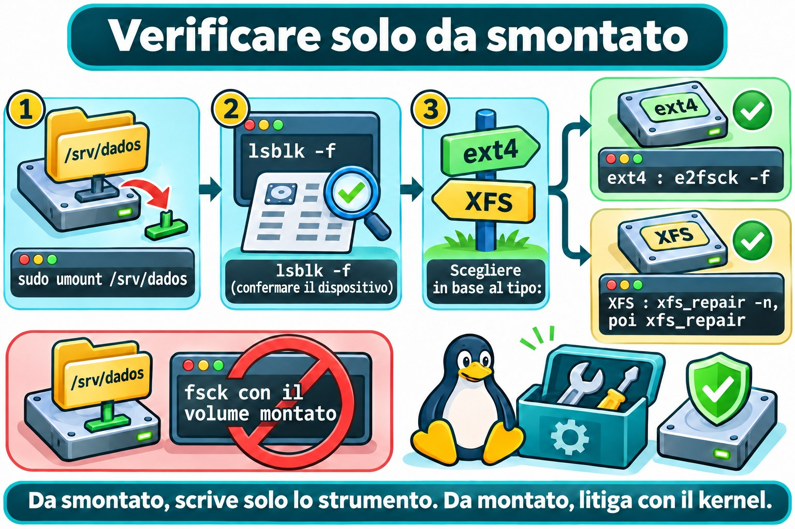

Lezione 9.5 · Integrità e spazio
In Windows guardi Explorer, vedi la barra del disco diventare rossa e lanci chkdsk quando succede qualcosa di strano. In Linux le stesse domande hanno strumenti separati: df e du per lo spazio, fsck per la consistenza. In questa lezione riempi davvero /srv/dados, scopri perché il disco può essere pieno senza avere file, e impari a verificare e riparare un file system in sicurezza.
Il cuore di questa lezione: leggere
df -h,df -iedu -h -d 1; trovare cosa occupa spazio; capire perché un file cancellato può continuare a occupare spazio (lsof +L1); capire i blocchi riservati di ext4 e la mancanza di inode; e lanciaree2fsck -fexfs_repairsolo con il file system smontato. Il resto è approfondimento.
| Scheda | |
|---|---|
| Modulo | M9 · Storage, lezione 5 di 7 |
| Quando | Settimana 14 |
| Alla fine | Diagnostichi un disco pieno per blocchi, per inode o per file aperto, e verifichi ext4 e XFS senza rischi |
| Prerequisiti | Lezioni 9.1-9.4 (i tre mount in /srv) |
| Durata | circa 2h30 |
| Snapshot | m9a5-inicio e m9a5-fim su rocky-lab e debian-lab |
1 · Riscaldamento
Rispondi prima di leggere.
dfmostra il 100% di uso, ma la somma dei file che vedi è piccola. Cosa può spiegarlo?- Un disco con metà dello spazio libero risponde "No space left on device". Com'è possibile?
- Perché non si lancia
fscksu un file system montato?
2 · Perché conta
| La richiesta | La risposta sbagliata | Cosa provoca |
|---|---|---|
| "Il disco è pieno, ma non trovo cosa occupa spazio" | Cancellare file alla cieca | Perdi dati e lo spazio non torna, se il file era aperto |
"Ho cancellato il log da 5 GB e df non è cambiato" | Cancellare altra roba | Il processo tiene ancora il file; bisogna riavviare il servizio |
| "Errore di spazio, ma c'è il 40% libero" | Ingrandire il disco | Gli inode sono finiti, e un disco più grande da solo non risolve |
| "Il server è caduto e il disco è strano" | fsck con tutto montato | Corrompe ciò che era integro |
3 · Modello mentale
Un file system è un magazzino con uno schedario. Gli scaffali sono i blocchi, dove stanno i dati. Le schede sono gli inode, una per file. Il magazzino si riempie se finiscono gli scaffali o le schede, e i due conti sono separati. Il responsabile tiene una riserva di emergenza di scaffali solo per sé (i blocchi riservati). E l'inventario non si fa mai con il magazzino aperto e la gente che sposta scatole:
fsckvuole il magazzino chiuso.
Disco "cheio"? Meça nesta ordem:
1. Blocos df -h Use% alto? Avail zerado?
2. Inodes df -i IUse% alto? (muitos arquivos pequenos)
3. Quem ocupa du -h -d 1 | sort -h desça pasta por pasta
4. Apagado/aberto lsof +L1 "(deleted)" ainda ocupa bloco
5. Reserva tune2fs -l Reserved block count (ext4)
Integridade, sempre desmontado:
ext4 umount -> e2fsck -f
XFS umount -> xfs_repair -n (olhar) -> xfs_repair (consertar)
Ponte Windows
| In Windows | In Linux | Dove il paragone inganna |
|---|---|---|
| Barra dello spazio in Explorer | df -h | df conta per file system montato, non per lettera |
chkdsk | e2fsck e xfs_repair | Girano con il volume smontato. Non esiste "pianifica al prossimo boot" come regola |
| File in uso: "impossibile eliminare" | Linux cancella, e il dato resta finché non viene chiuso | Il nome sparisce, ma lo spazio torna solo quando l'ultimo processo chiude |
4 · L'essenziale
Spazio: df e du
| Voglio... | Comando |
|---|---|
| Uso per file system | df -h |
| Mostrare il tipo (ext4, xfs, vfat) | df -hT |
| Uso degli inode | df -i |
| Dimensione totale di una cartella | du -sh PASTA |
| Un livello di cartelle | du -h -d 1 PASTA |
| I più grandi per ultimi | du -h -d 1 PASTA | sort -h |
-h mostra dimensioni leggibili (base 1024). -d 1 limita a un livello. sort -h mette 900K prima di 1G. -x impedisce a du di attraversare altri punti di montaggio.
df legge i contatori del file system. du percorre i file e somma. Se discordano molto, c'è un file cancellato e aperto.
Blocchi riservati (ext4)
Per impostazione predefinita ext4 riserva il 5% dei blocchi al root. Un utente normale riceve "No space left" quando resta solo lo spazio riservato. df lo mostra: Avail arriva a zero con Used ancora sotto il totale.
sudo tune2fs -l DISPOSITIVO | grep -i 'reserved block count'
sudo tune2fs -m 1 DISPOSITIVOtune2fs -l elenca il superblocco. -m imposta la riserva in percentuale. Su un disco solo dati, 1% o 0% è ragionevole. Sulla root, tieni il valore predefinito. tune2fs non funziona su XFS.
Inode
Ogni file, cartella e link usa un inode. ext4 fissa la quantità alla formattazione (circa uno ogni 16 KiB). Milioni di file minuscoli esauriscono gli inode prima dei blocchi. Il sintomo è No space left on device con df -h che mostra spazio. Conferma con df -i: IUse% sarà al 100%. XFS alloca gli inode dinamicamente.
File cancellato, ma aperto
In Linux rm rimuove il nome. Il dato viene liberato solo quando il contatore dei link arriva a zero e nessun processo tiene il file aperto. Ecco i casi:
sudo lsof +L1lsof elenca i file aperti. +L1 filtra quelli con meno di 1 link, cioè cancellati. L'output ha la colonna NLINK con 0 e il nome con (deleted). La riparazione corretta è riavviare o ricaricare il servizio proprietario del processo.


Verificare e riparare
| File system | Guardare senza modificare | Riparare |
|---|---|---|
| ext4 | e2fsck -n DISP | e2fsck -f DISP |
| XFS | xfs_repair -n DISP | xfs_repair DISP |
In ogni caso il file system deve essere smontato. fsck legge il disco direttamente, mentre il kernel modifica le strutture in memoria e scrive dopo. Con entrambi attivi, fsck "ripara" ciò che non era rotto, e il kernel sovrascrive la riparazione: corruzione vera. Il -f di e2fsck forza il controllo completo anche se il file system sembra pulito.
XFS riesegue il journal al mount. Per questo fsck.xfs non fa nulla: lo strumento è xfs_repair. Se rifiuta per log sporco, monta e smonta una volta. xfs_repair -L azzera il log e perde le modifiche recenti: solo quando montare è impossibile.
Il controllo periodico di ext4 sta nel superblocco: tune2fs -c (ogni N mount) e -i (intervallo). Sono disattivati. Il sesto campo di /etc/fstab (passno) decide se fsck gira al boot.


Rocky × Debian
| Rocky | Debian | |
|---|---|---|
lsof | sudo dnf install -y lsof | sudo apt install -y lsof |
xfs_repair | Arriva con xfsprogs | sudo apt install -y xfsprogs |
e2fsck, tune2fs | Arrivano con e2fsprogs | Arrivano con e2fsprogs |
| Verificare il pacchetto | rpm -q lsof xfsprogs | dpkg -s lsof xfsprogs |
| Root | XFS, solo dalla modalità di ripristino | ext4, solo dalla modalità di ripristino |
5 · Lab guidato
Riempi solo /srv/dados (1 GiB, ext4). La root non viene toccata.
Passo 0 · Snapshot, backup e preparazione. In Proxmox: qm snapshot 201 m9a5-inicio e qm snapshot 202 m9a5-inicio. Ricorda: lo snapshot non è un backup. Il backup PBS della lezione 9.1 resta la vera protezione. Su rocky-lab:
sudo dnf install -y lsof
rpm -q lsof xfsprogs
findmnt /srv/dados /srv/arquivo /srv/troca
sudo mkdir /srv/dados/lab95
sudo chown "$USER": /srv/dados/lab95findmnt deve mostrare i tre mount della lezione 9.4. chown consegna la cartella al tuo utente, per sentire la riserva del root.
Passo 1 · Leggere lo spazio.
df -h
df -hT /srv/dados /srv/arquivo /srv/troca
df -i /srv/dados
sudo du -h -d 1 /srv | sort -hOutput atteso (valori approssimativi):
Filesystem Type Size Used Avail Use% Mounted on
/dev/sdb1 ext4 974M 24K 922M 1% /srv/dados
/dev/sdb2 xfs 960M 39M 922M 4% /srv/arquivo
/dev/sdb3 vfat 511M 4.0K 511M 1% /srv/troca
Filesystem Inodes IUsed IFree IUse% Mounted on
/dev/sdb1 65536 12 65524 1% /srv/dadosPasso 2 · Riempire davvero. Controlla il bersaglio e il nome stabile della partizione:
findmnt -no SOURCE,FSTYPE /srv/dados
ls -l /dev/disk/by-id/ | grep 'drive-scsi1-part1'
dd if=/dev/zero of=/srv/dados/lab95/enche1.bin bs=1M status=progress
df -h /srv/dadosdd copia byte da if (input) a of (output). Senza count, scrive finché il disco rifiuta. bs=1M usa blocchi da 1 MiB; status=progress mostra l'avanzamento. L'errore finale No space left on device è quello atteso.
df mostra Avail 0 e Use% 100%, ma restano circa 51 MiB: sono il 5% riservato, solo del root. Dimostralo:
sudo tune2fs -l /dev/disk/by-id/scsi-0QEMU_QEMU_HARDDISK_drive-scsi1-part1 | grep -i 'reserved block count'
sudo dd if=/dev/zero of=/srv/dados/lab95/root.bin bs=1M count=10sudo dd scrive, perché il root usa la riserva. Ora libera la riserva per il tuo utente e riempi di nuovo:
sudo rm /srv/dados/lab95/root.bin
sudo tune2fs -m 0 /dev/disk/by-id/scsi-0QEMU_QEMU_HARDDISK_drive-scsi1-part1
df -h /srv/dados
dd if=/dev/zero of=/srv/dados/lab95/enche2.bin bs=1M status=progress
du -h -d 1 /srv/dados | sort -hCon -m 0, Avail sale di circa 51 MiB e il secondo dd riempie il resto. tune2fs regola la riserva con il file system montato.
Passo 3 · Verificare ext4. Libera spazio, smonta e controlla il dispositivo giusto:
rm /srv/dados/lab95/enche1.bin /srv/dados/lab95/enche2.bin
sudo tune2fs -m 5 /dev/disk/by-id/scsi-0QEMU_QEMU_HARDDISK_drive-scsi1-part1
sudo umount /srv/dados
lsblk -f /dev/disk/by-id/scsi-0QEMU_QEMU_HARDDISK_drive-scsi1
sudo e2fsck -f /dev/disk/by-id/scsi-0QEMU_QEMU_HARDDISK_drive-scsi1-part1
echo $?-m 5 ripristina la riserva predefinita. lsblk -f conferma che DADOS è senza punto di montaggio. L'output di e2fsck:
e2fsck 1.46.5 (30-Dec-2021)
Pass 1: Checking inodes, blocks, and sizes
Pass 2: Checking directory structure
Pass 3: Checking directory connectivity
Pass 4: Checking reference counts
Pass 5: Checking group summary information
DADOS: 13/65536 files (0.0% non-contiguous), 14123/262144 blocks
0La versione sulla prima riga cambia da una distribuzione all'altra. Il codice di uscita 0 significa nessun errore; 1, che c'è stata una correzione. Ora guarda cosa conserva il controllo automatico e torna al valore predefinito:
sudo tune2fs -l /dev/disk/by-id/scsi-0QEMU_QEMU_HARDDISK_drive-scsi1-part1 | grep -Ei 'mount count|check interval|last checked'
sudo tune2fs -c 30 -i 1m /dev/disk/by-id/scsi-0QEMU_QEMU_HARDDISK_drive-scsi1-part1
sudo tune2fs -c 0 -i 0 /dev/disk/by-id/scsi-0QEMU_QEMU_HARDDISK_drive-scsi1-part1
sudo mount /srv/dados-c 30 chiede il controllo ogni 30 mount, e -i 1m ogni mese. -c 0 -i 0 disattiva entrambi. mount /srv/dados usa l'fstab della lezione 9.4.
Passo 4 · Verificare XFS.
sudo umount /srv/arquivo
sudo xfs_repair -n /dev/disk/by-id/scsi-0QEMU_QEMU_HARDDISK_drive-scsi1-part2
sudo xfs_repair /dev/disk/by-id/scsi-0QEMU_QEMU_HARDDISK_drive-scsi1-part2
sudo mount /srv/arquivo-n è la modalità di sola osservazione: non modifica nulla. L'output finisce così:
Phase 7 - verify link counts...
No modify flag set, skipping filesystem flush and exiting.La riparazione vera finisce con done. Se umount dice target is busy, guarda il Guasto 3.
Passo 5 · debian-lab. Installa lsof e xfsprogs (dpkg -s conferma), e ripeti i passi 1, 2 e 3. Confronta gli output.
Decidi 1
La root / di rocky-lab (XFS) è al 97%. Primo passo?
A) sudo rm -rf /var/log/*. B) sudo du -xh -d 1 / | sort -h, e scendere nella cartella più grande. C) tune2fs -m 0 sulla root, per guadagnare spazio.
Scegli un'opzione prima di continuare.
| Se hai scelto | Risultato | Perché |
|---|---|---|
| A | Pericoloso | Cancelli senza sapere cosa occupa spazio, e sparisce lo storico |
| B | Giusto | Misuri con -x e trovi il bersaglio prima di agire |
| C | Non funziona | tune2fs è di ext4, e la root di Rocky è XFS |
Decidi 2
L'ext4 di /srv/dados è rimasto con errori dopo un'interruzione di corrente. Qual è la sequenza giusta?
A) e2fsck -f con il disco montato, per non fermare il servizio. B) Smontare, e2fsck -f sul dispositivo e rimontare. C) xfs_repair sul dispositivo.
Scegli un'opzione prima di continuare.
| Se hai scelto | Risultato | Perché |
|---|---|---|
| A | Rischio di corruzione | Il kernel e e2fsck toccano insieme le stesse strutture |
| B | Giusto | Con il file system smontato, e2fsck è l'unico che scrive |
| C | Strumento sbagliato | xfs_repair non capisce ext4 |
6 · Rompi e ripara
Fallo su rocky-lab, in /srv/dados.
Guasto 1 · Senza spazio, con spazio
mkdir /srv/dados/lab95/inodes
seq 1 70000 | sed 's|^|/srv/dados/lab95/inodes/f|' | xargs touch 2>&1 | tail -n 2
echo teste > /srv/dados/lab95/novo.txt
df -h /srv/dados
df -i /srv/dadosSintomo: touch: cannot touch ...: No space left on device, e anche echo fallisce, con quasi 900 MiB liberi in df -h.
Indagine: df -i mostra IUse% 100%. ls /srv/dados/lab95/inodes | wc -l conta circa 65 mila file.
Causa: gli inode sono finiti. Il disco ha spazio, ma non ha schede.
Riparazione: cancella i file piccoli. Usa find, con il percorso scritto per intero:
find /srv/dados/lab95/inodes -type f -delete
df -i /srv/dadosNella vita reale, trova l'applicazione che crea così tanti file (cache, sessioni, code).
Guasto 2 · Ho cancellato e lo spazio non torna
dd if=/dev/zero of=/srv/dados/lab95/grande.bin bs=1M count=400
tail -f /srv/dados/lab95/grande.bin > /dev/null &
rm /srv/dados/lab95/grande.bin
df -h /srv/dados
du -sh /srv/dadosSintomo: df mostra ancora 400 MiB usati, ma du mostra quasi niente.
Indagine: sudo lsof +L1. L'output è simile a:
COMMAND PID USER FD TYPE DEVICE SIZE/OFF NLINK NODE NAME
tail 2417 student 3r REG 8,17 419430400 0 12 /srv/dados/lab95/grande.bin (deleted)Causa: tail tiene ancora il file aperto, con NLINK 0. Il nome è sparito, il dato no.
Riparazione: termina il processo, con il PID mostrato da lsof (oppure kill %1, nella stessa sessione):
kill %1
df -h /srv/dadosLo spazio torna subito. Su un servizio, la riparazione è sudo systemctl restart SERVICO.
Guasto 3 · Non riesco a smontare
cd /srv/arquivo
sudo umount /srv/arquivoSintomo: umount: /srv/arquivo: target is busy.
Indagine: sudo lsof +f -- /srv/arquivo elenca bash con cwd in /srv/arquivo. findmnt /srv/arquivo conferma che è ancora montato.
Causa: la tua stessa shell è dentro la cartella. Un punto di montaggio si smonta solo quando non è in uso.
Riparazione: esci dalla cartella e riprova.
cd ~
sudo umount /srv/arquivo
sudo mount /srv/arquivoEvita umount -l e -f: nascondono l'uso, non lo risolvono.
Pulizia
rm -f /srv/dados/lab95/novo.txt
rmdir /srv/dados/lab95/inodes /srv/dados/lab95
sudo tune2fs -m 5 /dev/disk/by-id/scsi-0QEMU_QEMU_HARDDISK_drive-scsi1-part1
ls -la /srv/dados
findmnt /srv/dados /srv/arquivo /srv/trocarm -f non si lamenta se novo.txt non è nemmeno esistito (l'echo del Guasto 1 è fallito). /srv/dados deve mostrare solo lost+found, e i tre mount tornano attivi. Su debian-lab, fai lo stesso.
7 · Trappole
| Trappola | Cosa succede | Come evitarla |
|---|---|---|
fsck su file system montato | Corrompe | umount prima, sempre |
| Cancellare un log aperto | Lo spazio non torna | lsof +L1 e riavviare il servizio |
Guardare solo df -h | Perdi il problema degli inode | df -i insieme |
du senza -x sulla root | Somma altri dischi e /proc | du -xh -d 1 / |
tune2fs -m 0 sulla root | Toglie il margine al root | Solo su dischi dati |
8 · Quiz
Rispondi senza guardare. Le soluzioni sono alla fine della lezione.
- Qual è la differenza tra ciò che misurano
dfedu? - Quali due comandi mostrano "c'è spazio" e "gli inode sono finiti", rispettivamente?
- Cosa sono i blocchi riservati e chi può usarli?
- Quale comando elenca i file cancellati ancora aperti?
- Perché
fsckrichiede il file system smontato?
9 · Promemoria
Da sapere a memoria:
| Voglio... | Comando |
|---|---|
| Spazio | df -h |
| Inode | df -i |
| Chi occupa | du -h -d 1 PASTA | sort -h |
| Cancellato e aperto | sudo lsof +L1 |
| Riparare ext4 | umount, poi e2fsck -f DISP |
| Riparare XFS | umount, poi xfs_repair -n DISP, poi xfs_repair DISP |
Da consultare:
| Voglio... | Comando |
|---|---|
| Tipo del file system | df -hT |
| Riserva di ext4 | sudo tune2fs -l DISP | grep -i reserved |
| Cambiare la riserva | sudo tune2fs -m N DISP |
| Chi usa il punto | sudo lsof +f -- PONTO |
Flashcard:
dfedudiscordano → file cancellato e aperto.- Spazio libero ed errore di scrittura → inode (
df -i). - Riserva di ext4 → 5%, solo del root.
fsck→ solo smontato.
10 · Checklist e chiusura
- [ ] Leggo
df -h,df -iedf -hT - [ ] Trovo cosa occupa spazio con
du -h -d 1 | sort -h - [ ] Spiego la riserva del 5% di ext4
- [ ] Lancio
e2fsck -fexfs_repairsolo con il file system smontato - [ ]
/srv/dadosè tornato vuoto e i tre mount sono attivi
Ultimo esercizio, senza guardare la lezione: su debian-lab, riempi /srv/dados con un file, cancella il file con un processo che lo sta ancora leggendo, mostra la differenza tra df e du, trova il processo con lsof +L1, libera lo spazio, smonta e lancia e2fsck -f sul dispositivo tramite by-id. Poi pulisci.
Snapshot di fine (in Proxmox):
qm snapshot 201 m9a5-fim
qm snapshot 202 m9a5-fim11 · Nella vita reale
Missione, sola lettura. Su un server Linux che amministri (o con autorizzazione), lancia solo:
df -hT -x tmpfs -x devtmpfs
df -i -x tmpfs -x devtmpfs
sudo du -xh -d 1 / 2>/dev/null | sort -h | tail -n 8
sudo lsof +L1 2>/dev/null | head -n 20
sudo tune2fs -l /dev/DISPOSITIVO | grep -Ei 'reserved block count|mount count|check interval'Sostituisci DISPOSITIVO con un ext4 di df -hT (senza ext4, salta la riga).
Domande a cui rispondere:
- Qualche file system sopra l'80% di blocchi o di inode?
- Qual è la cartella più grande sulla root?
- Ci sono file cancellati ancora aperti? Di quale processo?
Diario: annota ciò che merita attenzione. Non modificare nulla, non lanciare fsck e non cancellare file.
Domani, senza guardare: scrivi i cinque passi di misura di un disco pieno.
12 · Approfondire quando vuoi
man df,man du,man lsof.man e2fsck,man tune2fs,man xfs_repair: codici di uscita, opzioni di riserva e fasi della riparazione.- Red Hat Enterprise Linux, documentazione "Managing file systems": verificare e riparare XFS ed ext4.
- Wiki di Debian e util-linux: ext4,
findmnt,lsblk. - kernel.org, documentazione di ext4 e XFS: formato del superblocco, journal e inode.
DeepTutor (http://10.1.0.149:3782, KB "Curso Linux Sysadmin"):
!feynman por que um arquivo apagado continua ocupando espaço!quiz Aula 9.5, 5 perguntas sobre df, du e fsck
Soluzioni commentate
Riscaldamento
- File cancellato e ancora aperto da un processo, oppure spazio fuori dalla portata di
du(un altro punto di montaggio sopra la cartella). - Gli inode sono finiti.
df -ilo mostra. - Perché il kernel modifica le strutture in memoria mentre
fsckle legge sul disco; la riparazione può corrompere un volume integro.
Quiz
dflegge i contatori del file system (blocchi usati e liberi).dupercorre i file visibili e somma quanto occupano.df -hper i blocchi, edf -iper gli inode.- Circa il 5% dei blocchi di ext4, che solo il root può usare. Evita che gli utenti normali blocchino il sistema.
sudo lsof +L1.- Perché una sola parte scriva nelle strutture. Se è montato, il kernel e
fscksi contenderebbero gli stessi dati.